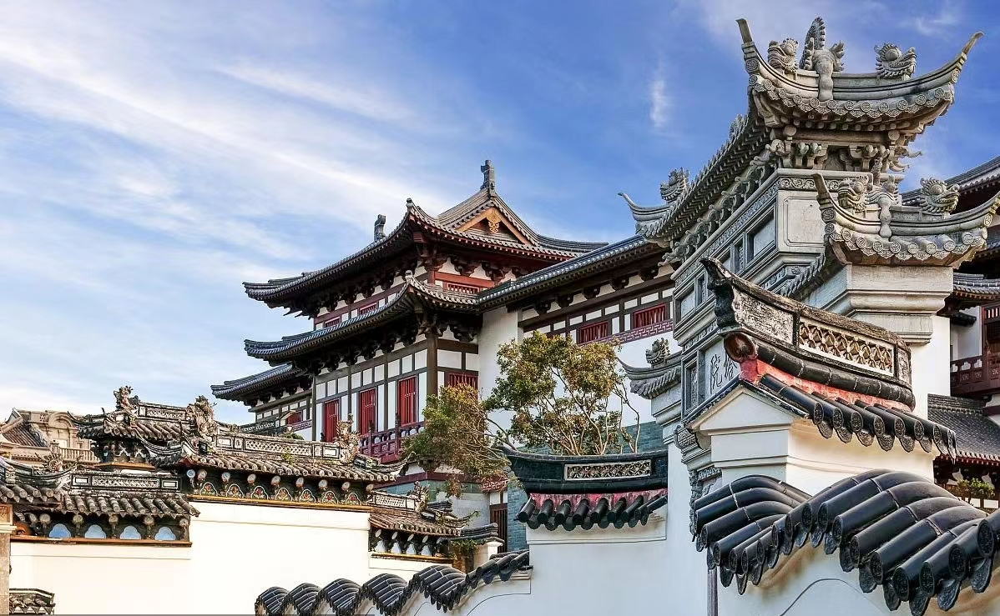
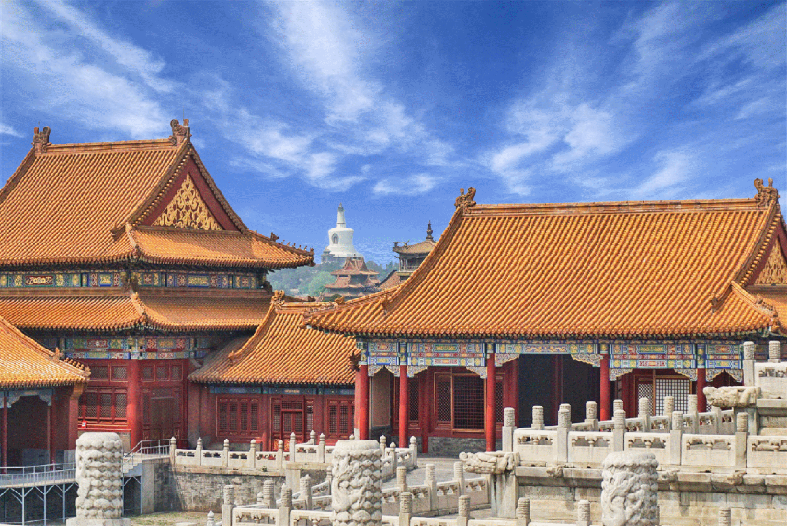
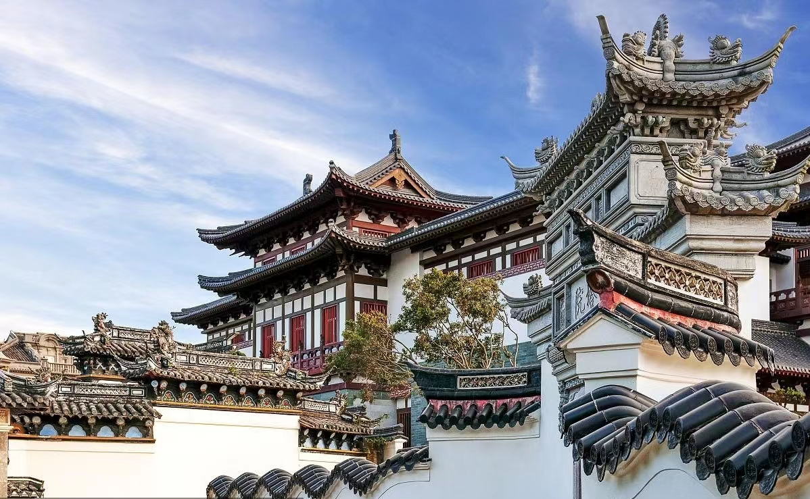
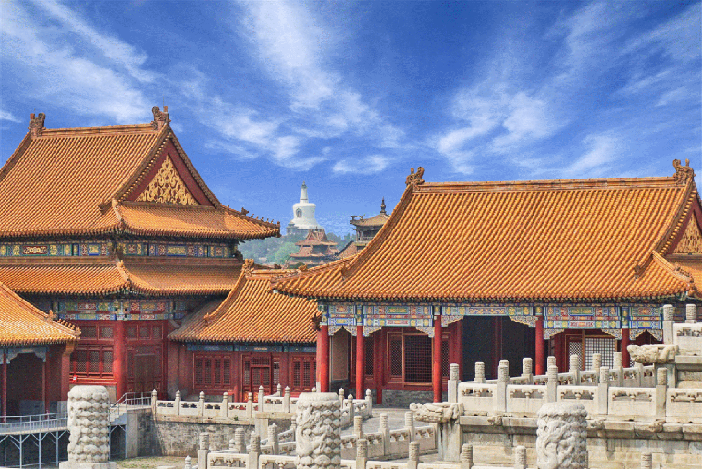

为什么要保护古建筑
古建筑是历史的见证，保护古建筑就是保护我们的历史。古建筑还有很高的艺术价值和科学价值，是历史文化遗产的重要组成部分。
历史价值：古建筑承载着丰富的历史信息和文化遗产。它们是过去时代社会、政治、经济和艺术发展的见证，通过研究古建筑，我们可以了解不同时期的社会状况、建筑技术和艺术形式。
文化传承：古建筑作为文化符号和象征，是民族和地区身份认同的重要组成部分。它们代表着特定文化的价值观、信仰和美学观念，对于后代传承、弘扬和维护文化的连续性至关重要。
美学价值：古建筑以其独特的建筑风格、工艺技术和艺术造诣而被认为是一种审美享受。许多古建筑展示了精湛的设计、比例协调和细节处理，它们植根于当地环境，与周围自然景观或城市街区相互呼应。
旅游资源：许多古建筑因其独特的历史和文化价值而成为重要的旅游景点。保护和修复古建筑可以促进旅游业发展，吸引更多游客，增加经济收入，同时推动当地社会和经济的可持续发展。
中国拥有众多历史悠久的古建筑，如长城、故宫、黄山寨等，这些建筑代表了中国悠久的文明历史和卓越的建筑技术，是中华文化的瑰宝。 古建筑体现了中国传统文化的核心价值观念，如亲情、友情、礼义廉耻等。它们与中国人民的生活方式、信仰和价值观紧密相连，是国家认同感和集体记忆的象征。 作为独特的文化符号，中国的古建筑吸引了来自世界各地的人们。通过古建筑的保护和展示，中国能够积极参与国际文化交流，增进不同文化之间的理解和友谊。